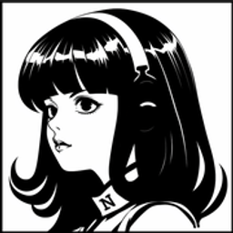

它不只是 AI 工具
它开始有人格

OpenClaw 把人格、记忆、工作方式、主动性和时间感
做成了一套可以持续维护的系统
OpenClaw 把人格、记忆、工作方式、主动性和时间感
做成了一套可以持续维护的系统
OpenClaw 能做什么？
它不只活在 IDE 里
很多 AI 工具只存在于编辑器里，或者只存在于某个聊天窗口里。
但 OpenClaw 更像一个网关式的 agent，它可以进入你真正工作的入口。
它能进入任务现场
很多 AI 给人的感觉是懂很多，但主要还是在生成文本。
OpenClaw 的不同点在于，它可以调用工具。
检查网页流程、自动化操作
读写文件、整理数据
执行终端命令、运行脚本
处理图片、音频、视频
是多个独立 agent
很多系统看起来像有很多 agent，但其实只是一个模型在切换 prompt。
OpenClaw 可以把不同渠道、不同账号、不同工作区，路由到不同 agent。
处理工作任务、项目管理
资料整理、笔记梳理
日程提醒、习惯追踪
它可以持续工作
普通 AI 很像按钮式系统：你按一下，它动一下。
OpenClaw 更像一个值班中的助手。
周期性醒来看看有没有重要事项
在准确时间执行任务
把复杂工作拆开来处理
它为什么像一个"活的 agent"？
SOUL.md 定义它的人格
SOUL.md 不只定义语气（活泼还是冷淡），还定义价值观、边界和判断方式。
它既定义"它怎么说话"，也定义"它是一个什么样的 agent"。
不是抽象用户，是具体的人
USER.md 让 agent 面对的不是"一个泛化的人类用户"，
而是眼前这个具体的人。
记忆不是悬空的，是写下来的
OpenClaw 的记忆不是"模型突然想起来了"，
而是"系统把值得记住的东西认真写下来了"。
长期记忆，记录真正值得留下的事实、偏好和判断
按日期记录的工作笔记和上下文流水
把前面三者串起来
AGENTS.md 规定这个 agent 平时怎么运行：
每次启动前要读什么，哪些事情可以直接做，哪些事情必须先确认。
人格开始参与时间
这是 OpenClaw 最有 agent 味的设计之一。
系统会定期把它叫醒，让它看一眼当前局面。
持续关注，没事就安静，有事才出手
精确调度，比如每天 08:00 发晨报

它不只是配置好的 agent，它会自我迭代
关键差异：Built-in Learning Loop
OpenClaw 给 agent 提供了改写自己 SOUL.md 的能力——但需要 agent 在对话中主动判断"我该更新记忆了"。
Hermes 在这个基础上，增加了一个关键能力：系统化的自我迭代机制。
一次踩坑，长期避坑
第一次去某家餐厅，发现周末排队要等2小时。Hermes自动记住这个规律。下次你想去那家吃饭，它会提前提醒你"要么避开周末，要么先拿号"。
记住你的偏好
上个月你说过"喝咖啡不加糖"。今天路过咖啡店，Hermes自动搜索历史记忆，直接给你点一杯不加糖的拿铁，不用你重复说。
主动发现规律
发现某个APP在晚上8点抢券成功率最高后，Hermes主动记住这个时间规律。以后抢券任务都自动在最佳时间执行，不用你反复试错。
不是替代，是进化
提供能力的框架
✓ 人格化系统（SOUL.md）
✓ 持久记忆（MEMORY.md）
✓ 多 agent 路由
✓ 工具系统（可改写文件）
✓ 主动性和时间感
静态配置，依赖 agent 主动判断
会进化的系统
✓ 所有 OpenClaw 能力
✓ Built-in learning loop
✓ 自动创建和改进 skills
✓ 跨会话学习和记忆
✓ 主动知识持久化（nudges）
动态成长，越用越聪明